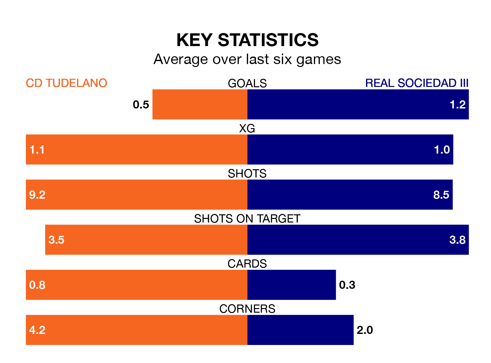

CD Tudelano face Real Sociedad III at the Estadio Municipal Ciudad de Tudela on Sunday looking to secure a first win in 15 Segunda División RFEF Group 2 games.
Tudelano have lost seven and drawn seven matches since they last earned three points – against Brea on November 12.
They face a Sociedad III side who have won four and drawn five over that time.
With 28 goals in 25 games so far this season, Tudelano are scoring at the league's average rate with 1.1 goals per game. And they are conceding fewer than average, letting in 26 goals at a rate of 1.0 per game.
Sociedad III are also average scorers, with 1.1 goals per game. They have also conceded 1.1 goals per game.
The away team are seventh in the table after 25 games, of which they have won nine and drawn seven, earning 34 points.
The hosts are three places behind Sociedad III in 10th, with seven wins and 10 draws putting them on 31 points.
In the last three years, Tudelano and Sociedad III have played each other on three occasions. Tudelano won two of them and they drew once.
Their last meeting was on October 29, when Tudelano won 2-1 away.
Tudelano's last match was on March 3, a 1-0 loss against Náxara CD.
Sociedad III lost 2-1 against CD Calahorra last time out, also on March 3, with Aitor Larrañaga on the scoresheet.
Updated: 09:34 (UTC), 08/03/24